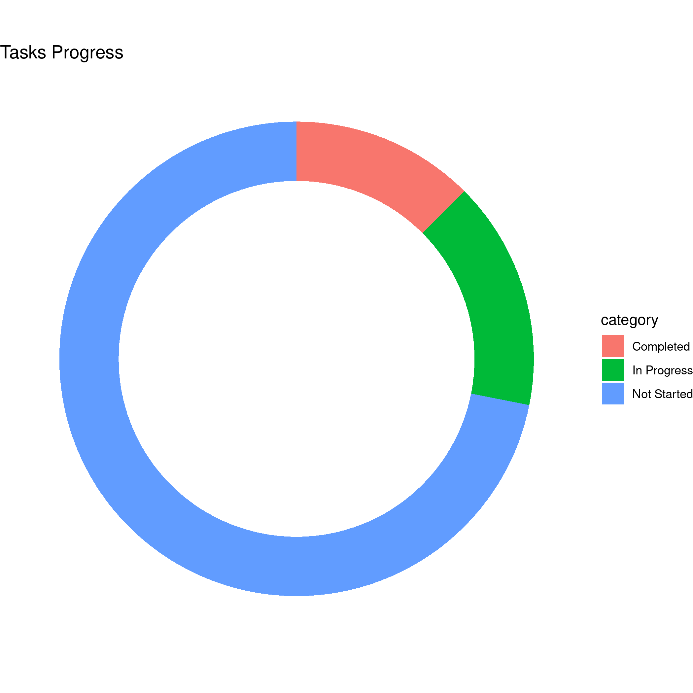

plannr is an in-development package used for parsing Microsoft Planner data into R via exported Excel spreadsheets for easy usage and creation of beautiful ggplot2 or plotly visuals.
Usage of plannr is fairly simple:
- Open your planner in the Microsoft Planner web application.
- Export plan to Excel (as
.xlsx). - Read using plannr’s
read_planner()function.
Now you have your Planner data imported into R as a plannr object!
Plotting with plannr
Using the plot_planner() function, you can quickly create a donut chart using ggplot or plotly to your specifications. plot_planner() supports filtering by:
-
tasks- Tasks (w/o Checklists) -
checklists- Tasks (w/ Checklists) -
priority- Priority -
late- Late Tasks -
assigned_to- Assigned To -
completed_by- Completed By
Examples:
Plannr Object Summary
plan_xlsx <- read_planner("path/to/planner.xlsx") summary(plan_xlsx) # Return: # =======>> PLANNER <<======= # Plan Name: Example Plan # Export Date: 01/01/1234 # ========>> TASKS <<======== # Total: 32 Tasks # Completed: 4 (12.50%) # In Progress: 5 (15.62%) # Not Started: 23 (71.88%) # ===>> CHECKLIST TASKS <<=== # Total: 57 Tasks # Completed: 0 (0.00%) # Not Started: 57 (100.00%) # ===========================
Basic Plotting
# Print a donut plot taking into account checklists on tasks plan_xlsx <- read_planner("path/to/planner.xlsx") plot_planner(plan_xlsx, by = "checklists")

Getting filtered plot data
# Return a easy-plottable-tibble of the planner data filtered by priority plot_planner(plan_xlsx, by = "priority", data_only = TRUE)
Extending with ggplot
# Easy customizability via `plot_type = "basic"` argument. # Which, returns a ggplot() object of the planner data without # anything additional. # # labs() parameters can be added to the end of the argument list # for plot_planner() calls. plot_planner( plan_xlsx, by = "tasks", plot_type = "basic", title = "Tasks Progress" ) + geom_bar() + theme_bw() + theme( legend.position = "none" )
Interactive plots with plotly
plot_planner( plan_xlsx, by = "checklists", interactive = TRUE )
Using dplyr with Planner data
Currently there’s two supported ways of using dplyr functions via plannr.
- Using
filter_planner()fordplyr::filter(). - Using
plot_planner(..., data_only = TRUE, ...)withmagrittrpiping.
Documentation
You can view the documentation here: https://plannr.justinsingh.me.